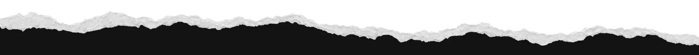

Fuera del mapa: la cultura que se sostiene sin fondos ni foco
Recorrimos centros comunitarios en cinco regiones para entender cómo se programa, se financia y se cuida la cultura lejos de Santiago.

Periodismo, creación y pensamiento crítico para leer la cultura como el lugar donde una sociedad crea, discute, recuerda y proyecta su futuro.
Lo que empieza a moverse antes de tener nombre: escenas, obras y conversaciones que vale la pena mirar de cerca.
Los clubes de lectura migran de Instagram a canales de WhatsApp barriales.
Ver señal →En Chiloé, tres festivales comparten producción para abaratar costos.
Ver señal →La cumbia ranchera vuelve a las fiestas universitarias, y no como ironía.
Ver señal →Ilustradores jóvenes firman cartas de autoría frente a la generación de imágenes.
Ver señal →Municipios del norte crean mesas de cultura con organizaciones migrantes.
Ver señal →Obras, conciertos, muestras y funciones que nos parecen valiosas, aunque no las organicemos nosotros.
No hay eventos de esta disciplina en las próximas semanas.
Ver cartelera completa →Recorrimos centros comunitarios en cinco regiones para entender cómo se programa, se financia y se cuida la cultura lejos de Santiago.
Piezas largas que siguen vigentes: para guardar, volver y discutir.
Siete campos de observación. Lo más interesante aparece en los cruces entre ellos.
Obras, procesos, lenguajes, escenas, crítica y circulación.
Instituciones, derechos, financiamiento, patrimonio, regulación y poder.
Identidades, vínculos, generaciones, educación, cuidados y formas de habitar.
Tecnologías, plataformas, memes, comunidades, estéticas y comportamientos emergentes.
Trabajo, audiencias, empresas, modelos de negocio y sostenibilidad.
Prácticas locales, memoria, descentralización, mediación y saberes comunitarios.
Música, fútbol, televisión, gastronomía, humor, moda y fenómenos masivos.
Anómala es una multiplataforma cultural y un laboratorio territorial que conecta periodismo, creación y pensamiento crítico.
Tu aporte ayuda a sostener un medio cultural con independencia editorial.
Donar